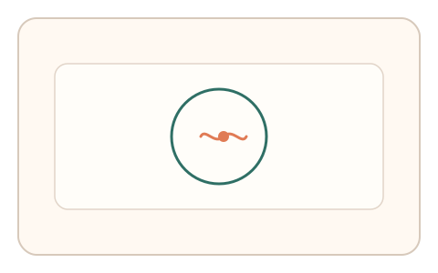

#92
Morphological Analysis - Combination Batches
已扩展
呼吸边界悬停
目标边界以呼吸节律伸缩，用户需保持指针在边界内 3 秒，以微纠偏频率与抖动谱验证真实性。
概念原文
目标边界以轻微呼吸节律伸缩，用户需保持指针在边界内 3 秒，系统记录微纠偏频率与抖动谱并做异常检测。任务结构为持续追踪，信号形态为轨迹动力学。
利用“微纠偏频谱”作为生理证据。
研究背景
持续悬停任务会暴露人类在微控制中的生理噪声与纠偏特征。当边界以呼吸节律变化时，真实用户会出现可测的微纠偏频率与抖动谱。
核心机制
- 目标边界以轻微呼吸节律缓慢伸缩。
- 用户保持指针在边界内持续 3 秒。
- 记录微纠偏频率与抖动频谱。
- 与群体基线分布比对判定。
用户流程
- 步骤 1：用户看到呼吸伸缩的边界。
- 步骤 2：用户持续悬停保持在边界内。
- 步骤 3：系统分析微纠偏与抖动谱并判定。
判定信号
微纠偏频率
人类持续悬停会出现稳定的细小修正。
抖动频谱
生理噪声在频域上有可辨结构。
判定逻辑
纠偏频率与抖动谱需落在人类分布区间；过度平滑或完全静止判异常。
对抗面
- 脚本固定悬停点模拟稳定输入
- 重放真实用户的悬停轨迹
防御与缓解
- 随机化呼吸节律幅度与相位
- 加入微扰动降低固定点悬停
- 叠加停顿与路径微差进行多信号判定
可达性与风险
提供更大边界与慢速模式，必要时提供替代任务。
- 手部障碍用户可能出现误拒
- 不同设备采样率影响信号质量
可视化状态
状态 1：呼吸边界
边界以呼吸节律伸缩。

状态 2：持续悬停
用户保持指针在边界内。

状态 3：频谱判定
根据微纠偏与抖动谱判定。
参考资料
Physiological tremor
说明微抖动与生理噪声结构。
Motor control
说明持续控制中的纠偏机制。